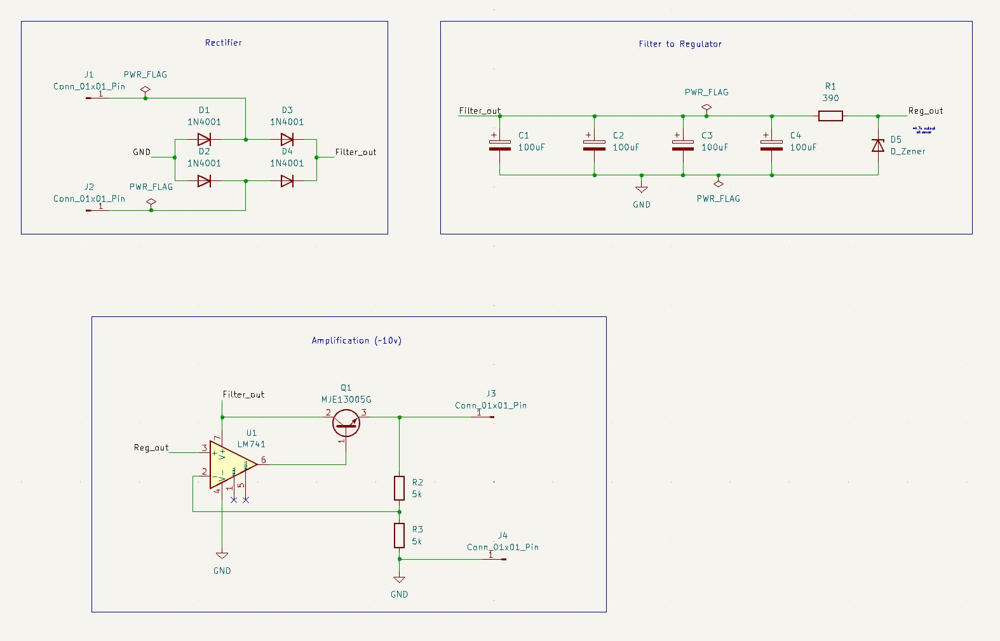
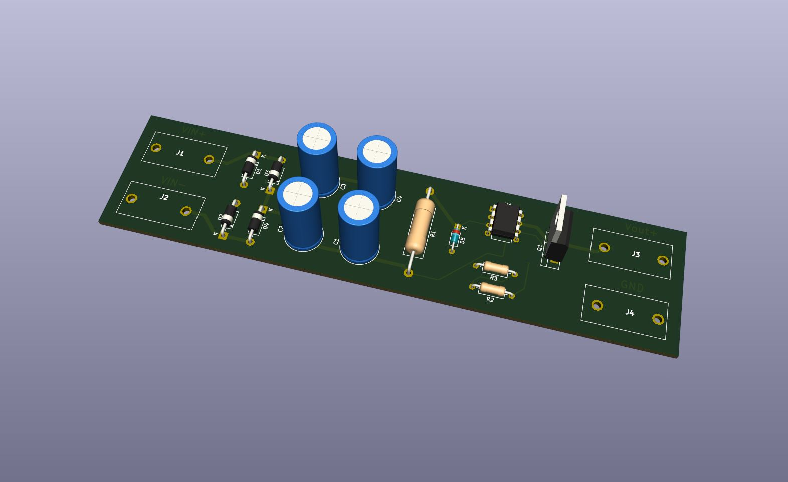
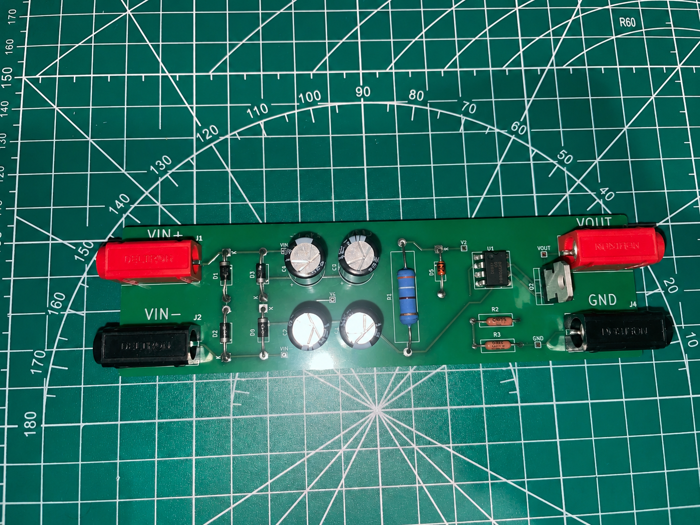

AC–DC Power Supply
Rectification • Voltage Regulation • PCB Design • Bench Testing
Personal Project · Power Electronics & Analog Circuit Design
From an AC secondary to a regulated DC supply
I designed, simulated, assembled, and tested a multi-stage AC–DC power supply that converts a transformer’s low-voltage AC output into approximately 9.5V DC. The circuit combines a full-bridge rectifier, reservoir capacitor, Zener diode reference, operational-amplifier gain stage, and BJT pass stage. I also designed the PCB in KiCad, taking into account current paths, routing, and component placement.
My goal was to understand the design decisions behind each stage of a regulated supply rather than rely on an off-the-shelf regulator. The project brought together AC rectification, ripple filtering, a DC voltage reference, analog gain, transistor current amplification, and the practical issues that arise when a simulated circuit is built and measured.
KiCad PCB DesignLTspice SimulationDiscrete Analog ComponentsPhysical Prototype
External step-down stage
RMS input to the rectifier
Approximately measured
Layout and assembly
Project scope. The circuit description and approximate output are based on my documented prototype. The transformer supplies a stepped-down AC secondary; the PCB is not presented as a directly mains-connected power supply. Exact ripple, efficiency, output-current, and thermal measurements are not reported here because I do not have verified values to publish.
1. System Architecture and Design Goals
The design follows a sequence of power-conversion and regulation stages. An external transformer reduces the AC line voltage to a nominal 25V RMS secondary. A diode bridge converts both half-cycles into the same output polarity. A large filter capacitor then reduces the resulting voltage ripple. Finally, a Zener-based reference, op-amp gain stage, and BJT pass stage establish the lower DC output voltage and provide more useful load-current capability than the op amp alone.
Each stage was selected to address a different requirement: correct output polarity, reduced ripple, a relatively stable voltage reference, a controllable DC output level, and adequate output-current drive. This modular approach also made it easier to simulate and troubleshoot the circuit a stage at a time.

2. Why I Selected a Full-Bridge Rectifier
One of the first design decisions was whether to use half-wave or full-wave rectification. A half-wave rectifier uses only one half of the sinusoidal secondary voltage. A full-bridge rectifier instead routes current through the load in the same direction during both halves of the AC cycle.
I chose the bridge topology because it provides a higher ripple frequency and more frequent charging of the reservoir capacitor. For a 60Hz input, full-wave rectification produces charging peaks at approximately 120Hz, compared with 60Hz for a half-wave rectifier. That makes ripple filtering easier for a given load and capacitance.
For a 60Hz supply and full-bridge rectification
The bridge requires two conducting diodes in each current path, so it introduces two forward-voltage drops. This represents a small efficiency tradeoff, but it is worthwhile for better use of the transformer secondary and lower ripple compared with a half-wave approach.
Estimating the rectified voltage
The nominal transformer output is specified in RMS voltage, whereas the reservoir capacitor charges toward the peak of the rectified waveform. For a 25V RMS secondary, the ideal peak is:
In practice, the capacitor peak is reduced by the forward drops of the two conducting bridge diodes, and the DC input to the regulation stage changes with load current, transformer regulation, and ripple. The high rectified voltage relative to the approximately 9.5V output is also important when evaluating power dissipated in the linear output stage.
3. Filter Capacitor Selection and Ripple
The output of the bridge rectifier is a pulsating DC waveform. A reservoir capacitor is placed across the bridge output to store energy near each voltage peak and supply the following circuit between peaks. Without this capacitor, the voltage entering the regulation stage would rise and fall substantially every half-cycle.
I sized the filtering stage with ripple reduction in mind. A useful first-order estimate for full-wave rectification is:
Approximation for a capacitor-input filter with nearly constant load current
This shows the basic tradeoff: increasing capacitance lowers the expected ripple at a given load, while higher load current increases ripple. The equation is approximate because the capacitor recharges in short pulses near each AC peak and the transformer and diodes have nonzero impedance.
The capacitor also needs a voltage rating safely above the expected peak voltage, including tolerances and possible no-load transformer voltage rise. Its ripple-current capability matters because the bridge charges it in pulses rather than with a steady DC current.
Why filtering alone is not enough. A large reservoir capacitor reduces line-frequency ripple, but it does not create a precise, load-independent voltage. The Zener, op amp, and BJT stages are included to establish and deliver the lower target DC output.
4. Generating a Reference with a Zener Diode
With the AC converted and filtered, the next step was to establish a reference voltage for the analog output stage. I used a Zener diode operated in reverse breakdown to provide a comparatively stable reference against changes in the unregulated DC input.
A Zener reference requires current limiting. The resistor feeding the diode must provide enough reverse current to keep it in its intended regulation region while avoiding excessive power dissipation. Conceptually, the current available to the Zener branch is:
When selecting this resistor and diode, the relevant checks are the minimum Zener current needed for regulation and the worst-case dissipation at the highest expected raw voltage. Real Zeners have finite dynamic resistance, tolerance, and temperature dependence, so the reference voltage is not perfectly constant.
I used the reference as a starting point for the op-amp stage instead of attempting to deliver the full output current directly from the Zener network.
5. Op-Amp Gain and BJT Current-Boost Stage
The Zener reference alone does not directly provide the desired output level or useful load-current drive. I incorporated an operational-amplifier stage to establish the target output voltage, followed by a BJT pass/current-boost stage to provide additional current to the load.
Setting the output voltage
The op amp allows a reference voltage to control a larger output level through an appropriate feedback and gain network. The required gain depends on the actual Zener reference voltage and the feedback topology shown in the schematic. For example, an ideal non-inverting gain stage follows the familiar relationship below, although the full transistor-driven supply must also account for the BJT and its feedback connection.
Reference equation for a non-inverting op-amp stage, not a claim of the exact resistor values used
The circuit was designed to produce an output near 10V, and the assembled supply produced approximately 9.5V DC. A closer analysis of the exact set point would require the resistor and Zener values from the schematic and measured output under defined load conditions.
Why add a BJT?
An op amp is generally not intended to supply substantial load current directly from its output pin. By controlling the base of a pass transistor, the op amp can regulate a higher-current output stage while the BJT delivers the load current. The current capability and operating limits are then determined by the transistor, its base-drive requirements, and thermal constraints rather than the op amp alone.
Thermal considerations
This is a linear regulation approach, so the voltage dropped across the pass device turns into heat. A useful first estimate of pass-device dissipation is:
Because a 25V RMS secondary can produce a rectified peak well above 30V, the difference between the raw bus and the approximately 9.5V output may be large. Higher load current therefore demands particular attention to transistor power rating, safe operating area, heat sinking, and overall efficiency. This is an important limitation of a simple high-headroom linear design.
6. PCB Layout and Component Selection
Once the circuit had been developed and simulated, I translated it into a KiCad PCB. A major layout consideration was keeping the higher-current rectifier, filter, and pass-transistor paths short and adequately wide while routing the Zener reference and op-amp signals separately where practical.
Trace width and copper losses matter because the highest-current branches create resistive voltage drops and dissipate heat. I paid particular attention to component placement and routing around the rectifier and transistor stage, where current and potential thermal dissipation are greater than in the reference and feedback circuitry.
Component ratings were also part of the PCB design process: the reservoir capacitor needed sufficient voltage margin; the bridge diodes needed suitable forward-current and reverse-voltage ratings; and the BJT required enough voltage, current, and thermal capability for the intended load.
Layout lesson. Correct connectivity is only the first PCB milestone. The current path through the bridge, filter capacitor, pass transistor, and load affects resistive loss, heating, and measured regulation. The sensitive reference and op-amp nodes have different routing priorities from the power path.
7. Simulation and Bench Validation
I used LTspice to investigate the circuit behavior before assembling the physical supply. The simulation workflow helped me reason through the rectifier output, the role of the filter capacitor, the reference stage, and how the op amp and transistor cooperate to produce a regulated output.
After assembling the PCB, I performed bench testing to confirm that the circuit produced DC output and to compare its behavior with the expected operation. The prototype delivered approximately 9.5V DC. I also evaluated how input and loading conditions influenced the behavior of the supply.
| Verification item | What it demonstrates | Documented status |
|---|---|---|
| Rectifier output | Conversion of AC secondary voltage to pulsating DC | Part of design/simulation workflow |
| Filter behavior | Reduction of AC ripple on the raw DC bus | Qualitatively evaluated |
| Output voltage | Regulated DC level following reference, gain, and pass stages | Approximately 9.5V on the prototype |
| Input/load variation | Effect of non-ideal conditions on regulation | Bench behavior considered; no numerical sweep reproduced |
I have not included numerical efficiency, maximum-load-current, ripple-voltage, or thermal plots because those measurements are not available in the project material used for this page. They would be useful additions if the prototype is characterized again.
8. Tradeoffs and Potential Improvements
The project demonstrated a straightforward way to combine power conversion and analog regulation, but also highlighted several tradeoffs:
- Bridge rectification versus half-wave: a bridge adds one extra diode drop to each conducting path compared with a single-diode half-wave rectifier, but provides twice the charging frequency at the same line frequency.
- Capacitance versus size and stress: increasing the reservoir capacitance reduces ripple but can increase size, cost, and charging-current peaks.
- Reference accuracy: the Zener's dynamic resistance and temperature behavior place limits on how stable the reference voltage can be.
- Output-current capability versus heating: the BJT makes higher output current possible but can dissipate significant power because of the voltage drop across the linear pass stage.
- Efficiency: a switching regulator or a lower-voltage transformer secondary could improve efficiency for a higher-current or continuously loaded application, at the expense of a different design and its own tradeoffs.
A next revision could include a systematic load sweep, oscilloscope measurements of ripple before and after regulation, thermal measurements of the transistor, and a quantified comparison between the simulated and measured load regulation.
9. Design Gallery
The following images document the PCB layout, 3D design, and assembled hardware. The complete schematic is shown earlier in the system-architecture section.



Engineering takeaway. This project connected the theoretical operation of AC rectification and analog regulation to practical component selection, PCB construction, and testing. It also made clear why voltage headroom, filter ripple, and transistor dissipation must be considered together rather than evaluating each stage independently.